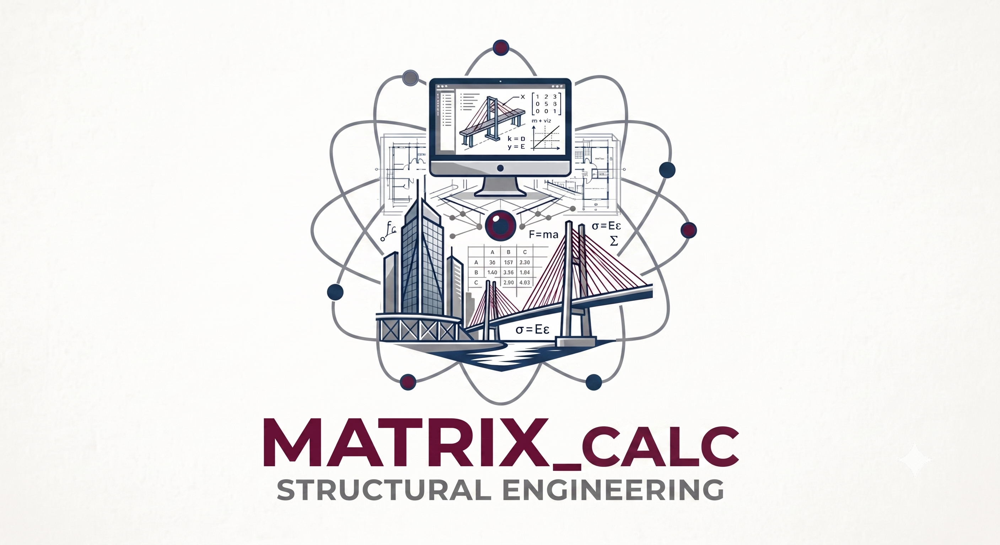

Contacto académico/profesional
Este espacio está destinado a consultas académicas, profesionales y técnicas relacionadas con ingeniería estructural, revisión documental, memorias técnicas, planos y normativa aplicable.
Para coordinar una comunicación directa, puede continuar mediante el siguiente canal: